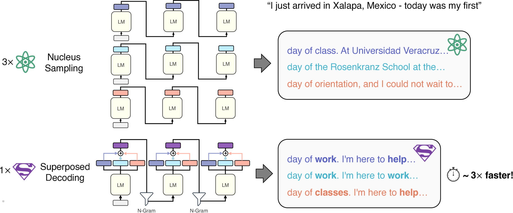
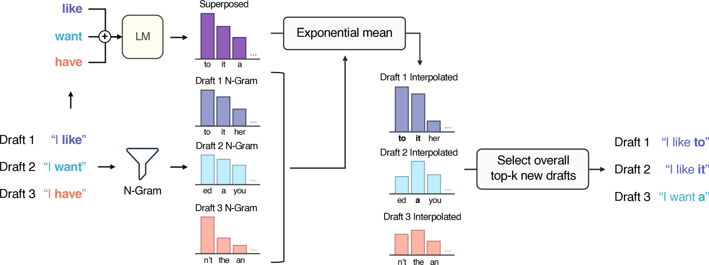
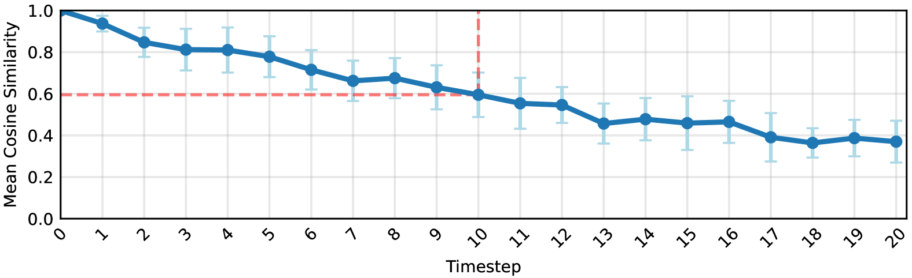
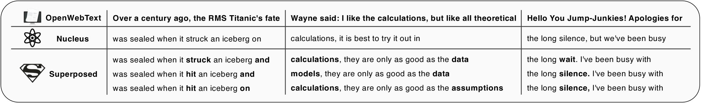
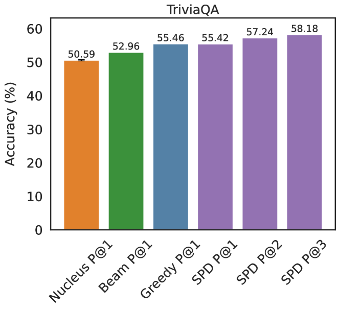
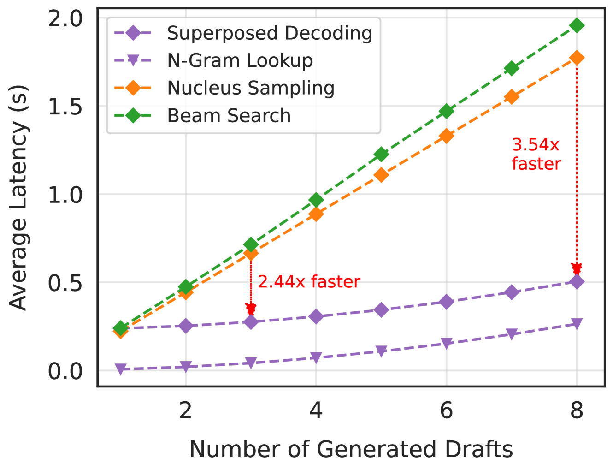
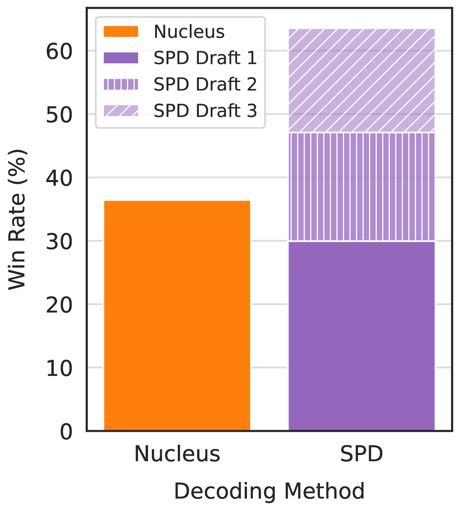

很多应用在你打字时提供多个补全草稿：GitHub代码补全、Gmail智能撰写、Apple消息自动建议。底层都是语言模型跑一次自回归推理给一个草稿，所以给k个草稿就要跑k次昂贵的语言模型。Superposed Decoding（SPD）提出新解码算法：用一次自回归前向的计算成本生成k个草稿。 做法是把k个草稿最近token的嵌入做加权叠加，作为下一步输入；每步结合top-k token得到k² 个新草稿，用计算开销极小的n-gram插值过滤掉不连贯生成，缓存k个最可能选项。在Llama-2-7B上，k≥3时SPD至少快2.44倍，且在一致性、覆盖率和人工偏好上不逊于甚至胜过Nucleus Sampling。
商业调查发现80% 的电商网站提供自动补全功能。随着大语言模型普及，自动补全草稿遍布更广的应用：Gmail Smart Compose的短句建议、GitHub Copilot的代码片段。这些选项让用户能权衡不同措辞，提高至少一个建议符合意图的概率。虽然语言模型支撑了这些多建议，但每多一个建议就要多一次推理（batch size=1），计算开销巨大。
语言模型用自回归推理为给定前缀生成合理的下一个token序列。解码算法如Greedy Decoding、Top-k采样、Beam Search、Nucleus Sampling提供了各种获取生成结果的方式。Greedy每一步选最可能token，最终只产生一个自动补全建议；Top-k从最高概率的k个token采样；Beam Search每步从k² 个可能草稿里挑最可能的k个束；Nucleus Sampling特别擅长生成自然文本。Top-k、Beam Search、Nucleus都能生成多个建议，但代价是都要多次自回归推理。

Superposed Decoding的关键洞察来自语言模型表示的表观线性性：对k个草稿各自最近token的嵌入做加权线性组合（superposition），其结果作为下一个解码步的单独输入，能高保真地近似所有k个草稿的真实隐状态。 利用这一点，SPD只需一次前向就能覆盖所有草稿，而不是每个草稿一次。

第一步：k个草稿都从前缀M初始化，对同一next-token分布贪心选第i个最可能token作为第i个草稿，记录各自概率作为分数。后续步：构造x̃_{t-1}，它是k个草稿最近token嵌入的叠加，作为LM在时间步t的输入：一次自回归推理覆盖所有k个草稿，而非往常的每草稿一次。
公式上，完整生成用联合概率累计：每个草稿的概率 = 首token概率 × 后续各步插值后分布的概率乘积。这样每步从k个草稿 × k个top token得到k² 个潜在新草稿，按联合概率排序后缓存top-k进入下一步。
因为每个草稿都有各自的上文线索和语法，不能盲目对所有草稿直接用xt的分布。SPD把叠加分布与n-gram模型给出的草稿特定next-token分布做插值，得到每个草稿独有的最终分布，从而在候选间保持上下文差异。
N-gram插值（n∈[2,6]）计算开销极低，还能在推理时灵活切换兴趣领域（编程、医疗、金融等），因为n-gram模型与LM解耦。它通过选择最可能且最连贯的续写（top-k草稿）进入下一步，显著提升生成连贯性。
为什么有效：SPD的有效性根植于同时发现的LLM表征线性性质：叠加嵌入与各成分token嵌入保持线性关系，使SPD在语义上近似Beam Search。这对短生成尤其贴合，且无需任何额外训练即可开箱即用地套在任何语言模型上。

主要实验在Llama-2-7B上进行，对比基线包括Greedy Decoding、Beam Search、Nucleus Sampling、Top-k采样。评测维度涵盖：生成质量（困惑度衡量自然度与连贯性）、事实性覆盖（TriviaQA、Natural Questions）、延迟（batch size=1下生成固定长度草稿的墙钟时间）、人工评测（Mechanical Turk）、推理时扩展。

SPD与Medusa、多token预测、投机解码、量化、剪枝、架构优化等效率技术正交：Medusa需要额外微调解码头，多token预测需要重新训练，而SPD开箱即用、无需任何训练，并且可与其他方法组合，实现普遍覆盖增益。
生成质量：SPD在Llama-2-7B上生成的k个草稿，其困惑度与Nucleus Sampling相当甚至更低：更自然、更连贯，且能生成一个有连贯多样性的草稿集。这意味着SPD并非牺牲质量换速度。
事实性覆盖：与Greedy Decoding相比，SPD的P@1精度相当，但在用多草稿时（P@2,3）显著提升事实性覆盖。在TriviaQA和Natural Questions上，用3个草稿时SPD将生成正确答案的概率提升至少5%。 对事实型评测任务，多草稿覆盖率的价值特别明显。

延迟：在batch size=1、从15 token前缀生成10 token草稿的设置下，SPD的墙钟耗时远低于Nucleus等标准解码。k≥3时SPD至少快2.44倍，且草稿按生成时的概率排序，用户在compute-normalized设置下更偏爱SPD的输出。

人工评测：经过对大量前缀的广泛人工评测（Mechanical Turk），SPD的草稿在直接对比（1v1）中与Nucleus Sampling同样受青睐，而在compute-normalized设置（3v1、3v2）下偏好度最高领先20%。因为SPD一次前向生成3个草稿，在相同算力下能提供是Nucleus数倍的建议多样性。

通用性与组合：SPD在Mistral 7B上同样工作，生成质量与长度与前缀长度鲁棒，且能可靠生成长内容。把SPD与Nucleus Sampling组合时，随推理时计算扩展获得显著的准确率提升：SPD生成每个Nucleus采样：配对、甚至单个Nucleus草稿的多个建议，覆盖增益普遍提升。
参考：https://arxiv.org/html/2405.18400v6